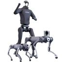

Lookout: what are researchers and labs working on?
Sometimes you do not know what you could do because you have not seen it yet. Looking at other labs, companies, and researchers gives you new reference points and changes your understanding of a direction.
AI and robotics companies
Language, multimodal models and AI systems
 Tencent · Hunyuan
Tencent · Hunyuan
Language, multimodal, image and video models; explore releases, reports and examples through Hunyuan.
 Xiaomi · MiMo
Xiaomi · MiMo
Reasoning, vision and speech models, with papers on training methods and model design.
 ByteDance · Seed
ByteDance · Seed
Language, speech, vision, world models and AI systems, organized by research area.
 Moonshot AI · Kimi
Moonshot AI · Kimi
Long context, reasoning and agents; open models connect training, tool use and evaluation.
 DeepSeek
DeepSeek
MoE, efficient training and reasoning models, with reports connecting architecture, training and engineering.
 Alibaba · Qwen
Alibaba · Qwen
Language, code, vision-language and omni-modal models, with weights, examples and reports by model family.
 MiniMax
MiniMax
Long-context reasoning and multimodal generation; compare attention design and inference cost.
 Z.ai · GLM
Z.ai · GLM
Reasoning, coding and agents, with model implementations, usage examples and research material.
 Google DeepMind
Google DeepMind
Gemini, robotics, reinforcement learning and scientific discovery, with papers and model reports.
 OpenAI
OpenAI
Language, multimodal, reasoning and agent research, with evaluations and system cards.
 Anthropic
Anthropic
Claude, interpretability and alignment, including experimental methods and model behavior.
 Meta AI
Meta AI
Llama, vision and multimodal research, with open-model reports covering data, training and deployment.
Read technical reports by model family ↗
Robotics and embodied AI
These teams approach robot capabilities through simulation, human manipulation data, general-purpose models, skill adaptation and control on real hardware. Each entry connects a research focus with work to explore.
Physical Intelligence · π
Builds general-purpose models for robot manipulation. π0 and π0.5 connect vision, language and actions; openpi provides models and training and inference code.
Galbot
Develops embodied models and robots for manipulation and mobile tasks, including retail and material handling. Its developer portal covers perception, planning, control, navigation and simulation.
AGIBOT
Develops humanoid robots and embodied models, with manipulation data and development tools. AgiBot World shows how real-robot data is organized; open projects connect models to robot platforms.

Unitree RoboticsDevelops quadruped and humanoid robots, including G1 and H1 platforms used in locomotion research. Unitree RL Gym connects reinforcement-learning training with deployment from simulation to hardware.
Galaxea
Develops mobile manipulators and embodied models, with open training and deployment tools. G0.5 generates reasoning and actions in one autoregressive stream, using cross-embodiment action tokens and visual memory.
Fast-WAM separates learning to predict the future during training from generating it during execution, studying action quality and latency when test-time video prediction is skipped.
Sudo Robotics
Starts with simulation-trained policies for picking unfamiliar objects. Its sudo R1 release reports simulation-only training and observation-conditioned actions at 15–25 Hz.
Watch how the policy responds to moving targets, mid-grasp disturbances and constrained spaces. The website includes a technical explanation and a continuous 60-minute picking video.
TARS Robotics
Studies how human manipulation can supply robot training data. WIYH provides wearable capture hardware, automatic annotation and over 1,000 hours of multimodal human manipulation data.
Follow WIYH from capture and annotation to skill transfer. The AWE series explores vision–touch fusion and precise contact manipulation, including flexible wiring assembly.
X Square Robot
Studies embodied foundation models and adaptation to new tasks. HOST acquires a new manipulation skill from one human demonstration video at inference time, without updating model weights.
WALL-SS is an action-controllable generative robot simulator for long-horizon interaction, studying whether simulated task outcomes and policy rankings match real robots.
Noematrix
Develops embodied models, the AnySkill library and tools from data capture to deployment, covering grasping, folding and contact manipulation.
Its joint research project RoboPocket overlays predicted policy trajectories on a phone camera view. Collectors identify likely failures, provide corrective demonstrations and update the policy through online fine-tuning.
Pokebot
Founded by Huazhe Xu, Pokebot focuses on robot manipulation in household settings. Its website demonstrates cooking, folding clothes, tying sachets and threading cable ties.
Explore how the demonstrations connect long task sequences, coordinate two arms, handle deformable objects and recover from errors.
Embodied AI: tasks, models and papers ↗ · RL: robot control and research routes ↗
Meet people through their work
When a demo makes you curious, find the original project. Read the problem and method, then inspect the authors' other work and the groups behind related papers. A community gradually becomes familiar.
For example, follow demonstration and action modeling from ACT / ALOHA toward robot data and policy learning. Follow tools and feedback from ReAct toward long tasks, recovery, and evaluation.
Write down questions worth asking, then contact an author or senior student.
Places to look
OpenAI News
Model, research, and engineering releases. Follow relevant items to technical material and evaluation conditions.
Anthropic Research
Mechanisms, alignment, real-world use, and societal impact. Look at each article's starting question and method.
Google DeepMind publications and Google Research
Search your area, then follow authors and related papers.
Berkeley AI Research Blog
See how lab members introduce and develop a research question.
Hugging Face Daily Papers
Discover papers and discussions, then return to the original, code, and author pages.
Combining media and personal blogs
Jiqizhixin, QbitAI, Xinzhiyuan, Xiaohongshu, Zhihu, Bilibili, X, and YouTube can introduce new things. Follow interesting news to the original paper or release.
Z Potentials
Interviews with AI teams, founders, and technical practitioners. See what different teams are working on, why they chose a problem, and how their technology becomes a product.
葬AI / Funeral AI
AI product experiences and industry commentary with a direct, personal voice. Explore how new products work and what people are debating.
Personal blogs show process as well as outcomes. Jianlin Su is useful for mathematics and model questions, Simon Willison records tool experiments, and Karpathy shares courses, projects, and essays. See also experience.
Hear researchers explain their work
张小珺 Jùn — Business Interviews
Long conversations with researchers and founders about technology, their careers, and important choices.
Start with the Saining Xie episode, covering his education and research career, representation learning, research taste, world models, and starting a company. You can begin with his experiences and research choices, then pick the technical sections that interest you.
WhyNotTV
Researcher interviews and personal accounts of university and research life, covering both the work and the choices along the way.
- My first two years of a robotics PhD — 任尔东西南北风: Tairan He looks back on his first two years at CMU, connecting research on legged locomotion, humanoid teleoperation, and control with the collaborators behind the projects.
- Jiayi Weng interview: Undergraduate encounters with reinforcement learning, open-source projects, university applications, and work on post-training and infrastructure at OpenAI.
What questions should you note after reading new work?
Write a few sentences: what problem does this work address, how does it differ from what you knew, and what would you like to explore? Share an article with your question when it seems worth discussing.
If you keep stopping at the same topic, it may be a clue to explore through the directions pages.
Research communities and knowledge sharing
 OpenEnvision
OpenEnvision
OpenEnvision (OE) is an open AI research community connecting academia and industry, with interests in world models, multimodal intelligence, vision, and embodied AI. It also shares research knowledge through curated writing, interviews, and courses.
- BlogrXiv: AI research blogs and technical writing brings together research blogs, lab essays, and technical notes. Browse by field for explanations, engineering experience, and research methods, then follow links to the original articles.
- ScholarTube: AI interviews, podcasts, and courses collects long-form researcher interviews, video podcasts, complete courses, and research talks across agents, world models, vision, robotics, and research practice, with links to the original videos.
You can also recommend articles and videos to BlogrXiv and ScholarTube.
 Lumina
Lumina
Lumina brings together embodied AI research, open projects and community events. Its Embodied AI Guide organizes the field’s learning resources; Talks, research coverage and events on the website introduce the people and projects behind the work.
Follow material to people and teams
Research groups offers problem-based entry points; author blogs adds process and personal judgment; the information-channel catalog retains other sources from the earlier research rounds.